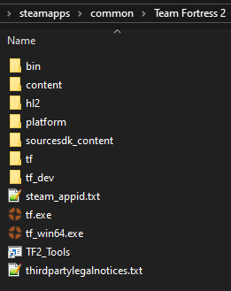
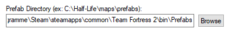

There are multiple ways to install BAMF:
It is recommended that you read about the Features first. If you don't want a module right now, you can always install it later.
Manage -> Browse Local Files. You're going to want to bookmark this folder as it is rather essential for mapping.)

FGD folder. Move the entire content into Team Fortress/bin.
bin folder in Team Fortress 2/tf. Ignore that one, it is never used for anything mapping-related.
Prefabs folder. Move the entire content into Team Fortress/bin/Prefabs. If that directory doesn't exist, create it.
VPKs folder. Move the entire content into Team Fortress/tf/custom.
Tools → Options..., then select the Game Configurations tab.
Game Data files section by selecting and clicking Remove.
Add and navigating to Team Fortress 2/bin/tf-brokk.fgd.
Prefab Directory is set like this:

VMFs and Gamemodes folders contain a variety of reference material that should help you get started. Move those to wherever you keep your projects. Thanks and have fun.